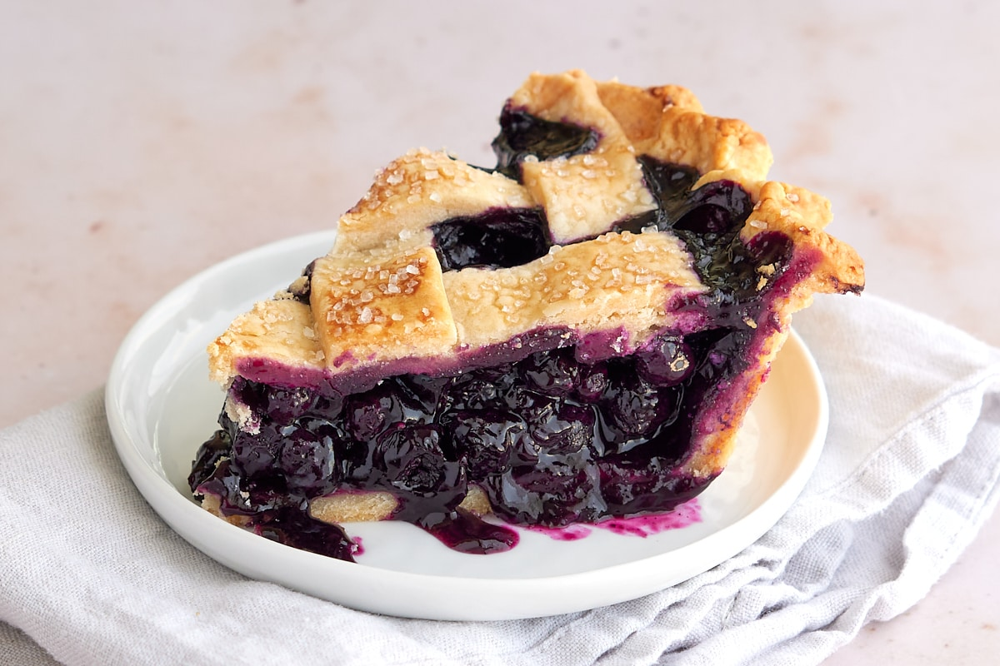

Blueberry pie

Description
No matter the event, this delicious blueberry pie is perfect for any occasion. With a delicious crust to an even more delicious> filling, this pie has it all!
Ingredients
- cornstarch.
- Sugar.
- Cinnamon.
- Salt.
- Blueberries.
- Butter.
- Pie crust.
Steps
- Put the some cornstarch, sugar, salt, and cinnamon on the blueberries.
- Take the bottom pie crust and fill it with the blueberry filling.
- Place the lattice crust on the top of the bottom pie crust that you filled in the previous step.
- Place in oven and bake until the crust gets a golden color, and when the blueberry filling starts to bubble.
- Serve and enjoy!